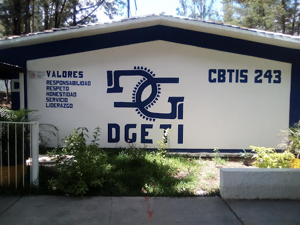
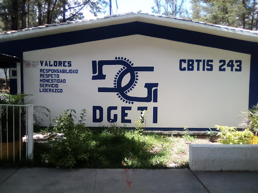

CONOCENOS

DIRECTORIO
Mtro. Esdras Mejia Ramirez Director de Coordinacion de Proyectos
Mtro. Jhony Jordan Roblero Galindo Presidente de ALIDET
Mtro. Maugro Joseim Gomez Roblero Evaluador 1 de Proyectos Locales
Mtra. Ingrid V. Ordaz Paxtor Evaluador 2 de Proyectos Locales
Mtro. Luis David Farrera Ruiz Coordinador de Proyectos Locales
REDES SOCIALES:
BLOG


Escuela Media Tecnica Terminal Publica. Desde la empresa Cbtis 243 en Motozintla le ofreceremos el máxima cumplimiento y seriedad. Si está buscando diferenciación y seguridad en Escuela, esta es la empresa que estaba buscando. Estaremos encantados de darles nuestro mejor servicio en Motozintla.
En el actual C. B. T .i. s. No. 243, que funciona en la ciudad de Motozintla, Chiapas, se formo como una extensión del C. E. T. i. s . No. 136 del municipio de Frontera Comalapa, teniendo en ese entonces las especialidades de “SUELOS Y FERTILIZANTES” Y “CONTABILIDAD”, con una población estudiantil de 117 alumnos. Se iniciaron las labores educativas, el día 05 de septiembre del año de 1988, en el turno vespertino, en la Escuela Primaria Federal “NIñO ARTILLERO”. En el año de 1991 se continuaron las labores en la Escuela Primaria del Estado “MOTOZINTLA”. En el mes de Octubre del año de 1992, se recibe la autorización para el cambio de nombre del plantel y la clave del nuevo centro de trabajo: C.B.T.i.s. Número 243. CLAVE: 07DCT9911G.
 

Las instalaciones se han fortalecido y se ha visto un grado mayor de avance en cuanto al número de alumnos y de personal. En la actualidad, el plantel cuenta con una población estudiantil de aproximadamente de 429 alumnos y 38 personas laborando en el área de docencia, administrativo y de intendencia. La escuela ofrece las siguientes especialidades: CONTABILIDAD, ENFERMERIA GENERAL, OFIMATICA, PROGRAMACION Y CONSTRUCCION. Cabe destacar que, los alumnos corrieron trayendo una antorcha desde Mazapa de Madero, Chiapas a 10 km. de esta ciudad. El acto inaugural le correspondió al lic. Marco Antonio Zunún. Director de la preparatoria
"Alcancemos el mañana con nuestra propia tecnología". 32 años ofreciendo educación tecnológica de calidad
Calle central poniente s/n barrio san francisco c.p. 30900 (teléfono y fax: 962-64-10262)
e-mail institucional: cbtis243.dir@uemstis.sems.gob.mx